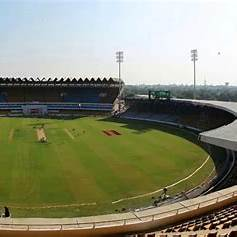
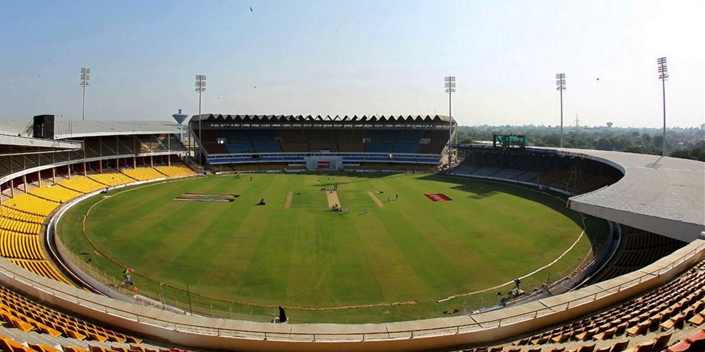
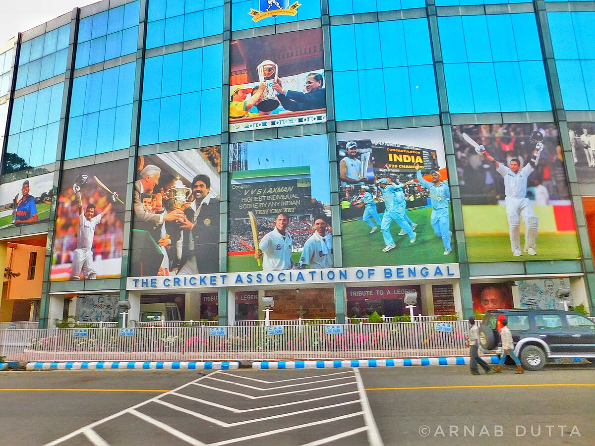

About Eden Garden



Eden Gardens, established in 1864, is India's oldest and second-largest cricket stadium, often referred to as the "Mecca of Indian cricket."
Historical Significance: Originally a British colonial garden, Eden Gardens transitioned into a cricket ground in the late 19th century. It has since hosted numerous historic matches, including the 1987 World Cup final and the 2016 ICC World Twenty20 final.
Visitor Information:
Visiting Hours: The stadium is open to visitors on non-match days from 10:00 AM to 5:00 PM.
Entry Fee: An entry fee of ₹50 per person is charged for non-match day visits.
Guided Tours: Guided tours are available, offering insights into the stadium's history, architecture, and memorable matches. These tours typically include visits to the pitch, dressing rooms, galleries, and the museum.
Museum: The on-site museum showcases rare cricket memorabilia and artifacts, providing a deeper understanding of the sport's evolution in India.
Details
Location : Gostho Paul Sarani, Maidan, B. B. D. Bagh Kolkata, West Bengal, India
Phone : 03322480411
Email : support@edengarden.com